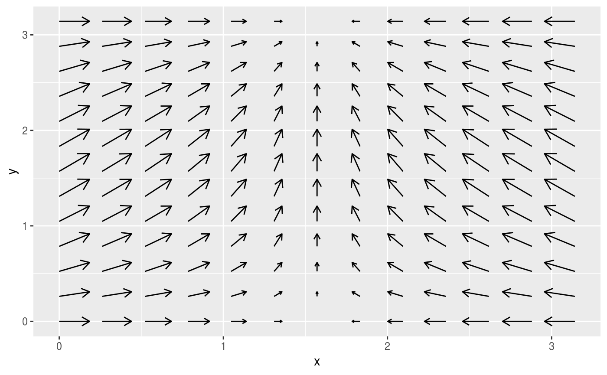
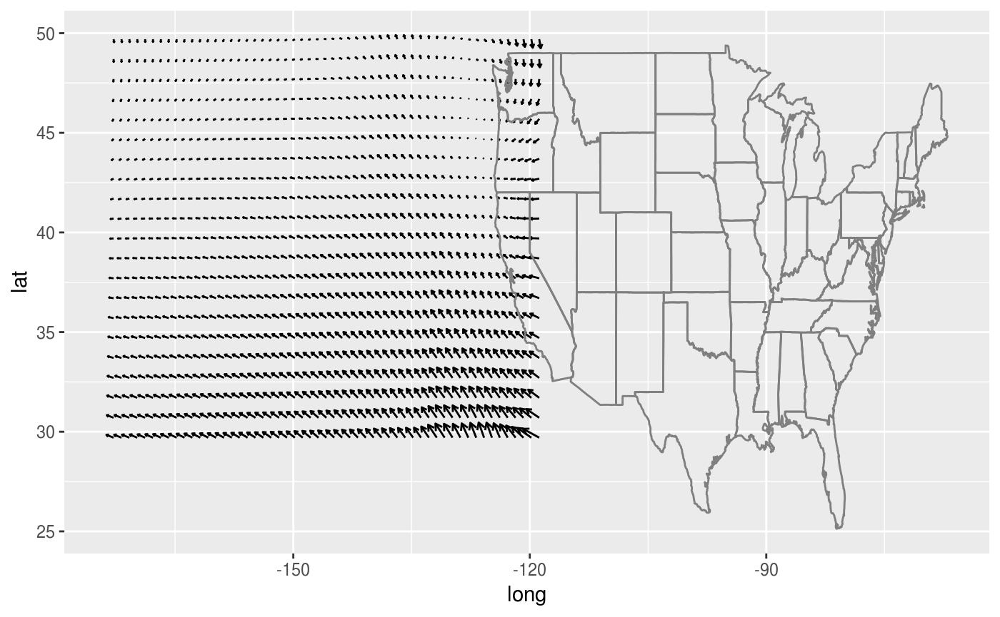
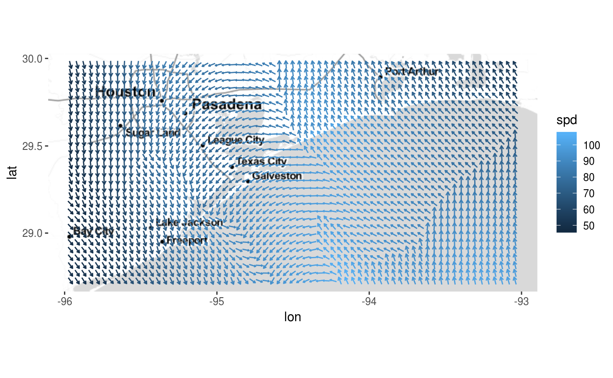

Quiver plots for ggplot2. An extension of ‘ggplot2’ to provide quiver plots to visualise vector fields. This functionality is implemented using a geom to produce a new graphical layer, which allows aesthetic options. This layer can be overlaid on a map to improve visualisation of mapped data.
Installation
The stable version can be installed from CRAN:
install.packages("ggquiver")The development version can be installed from GitHub using:
# install.packages("remotes")
remotes::install_github("mitchelloharawild/ggquiver")Usage
ggquiver introduces a new geom geom_quiver(), which produces a quiver plot in ggplot2.
Quiver plots for functions can easily be produced using ggplot aeshetics. When a grid is detected, the size of the vectors are automatically adjusted to fit within the grid.
library(ggplot2)
library(ggquiver)
expand.grid(x=seq(0,pi,pi/12), y=seq(0,pi,pi/12)) %>%
ggplot(aes(x=x,y=y,u=cos(x),v=sin(y))) +
geom_quiver()
The ggplot2 example for seal movements is easily reproduced, with appropriately scaled arrowhead sizes. Here, the vecsize is set to zero to not resize the vectors.
ggplot(seals, aes(x=long, y=lat, u=delta_long, v=delta_lat)) +
geom_quiver(vecsize=0) +
borders("state")
Quiver plot arrows can be centered about x and y coordinates, which is useful when working with maps and scaled vectors.
library(ggmap)
library(dplyr)
wind_data <- wind %>% filter(between(lon, -96, -93) & between(lat, 28.7, 30))
qmplot(lon, lat, data=wind_data, extent="panel", geom = "blank", zoom=8, maptype = "toner-lite") +
geom_quiver(aes(u=delta_lon, v=delta_lat, colour = spd), center=TRUE)